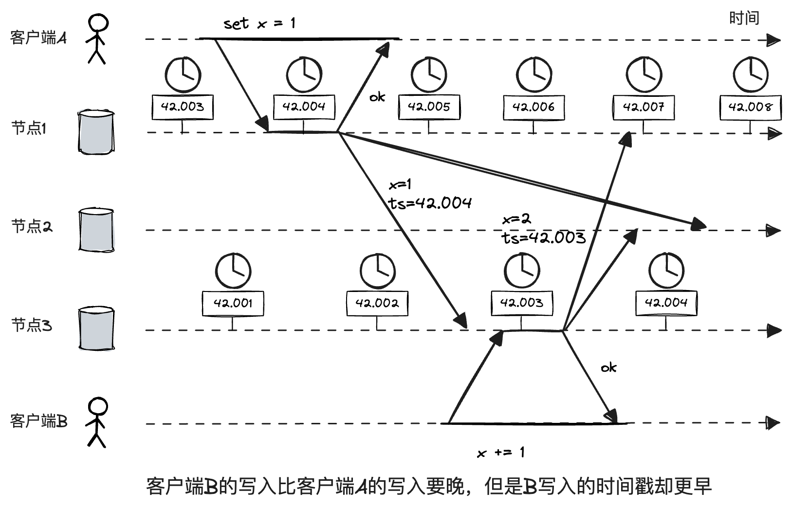
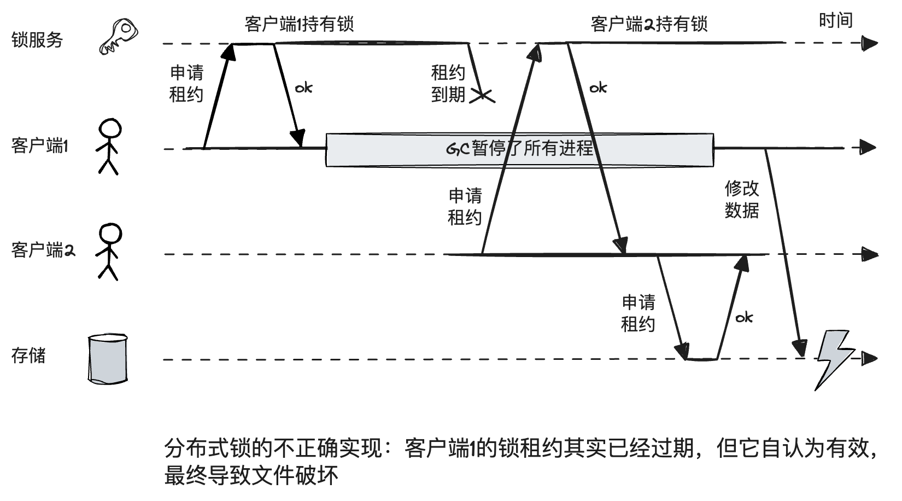

第8章 分布式系统的挑战
对于大型分布式系统，部分组件失效几乎是一定的。
不可靠的网络
分布式系统故障或部分失效的一大原因。
检测故障
检测故障没有什么万能的方法，如果能收到响应，通常使用各种状态码标识，另一些情况下通用的办法就是超时了。
超时与无限期的延迟
超时成因：
- 负载过重，排队。
- CPU繁忙。
- 虚拟机环境切换。
- TCP流量控制（也称拥塞消除，或背压）。
TCP与UDP
UDP不支持流量控制也不支持重传丢失的数据包，速度较快。如果延迟或丢失的数据价值不大，UDP是一个不错的选择。比如IP电话，应用程序会采用静音填充丢失的位置（出现短暂声音中断）。
超时设置长了或短了都不好。更好的方法是自动调整，比如Phi Accrual故障检测器，已经在Akka和Cassandra中使用。TCP重传也采用了类似的机制。
同步与异步网络
固定电话网在打电话时会动态建立一条电路：一个固定的、带宽有保证的通信链路，这种网络本质是同步的，不会受到排队的影响。由于没有排队，网络最大的端到端延迟是固定的。我们称之为有界延迟。
究其根本是目地不同，电话网线路持续时间短，要求及时性，而以太网追求资源的最大化利用。有了这个目的以太网才采用了分组交换协议，这样可以最大化的利用带宽：带宽小的时候我就传少点，带宽大的时候我就传多点。
简言之，网络中可变延迟并不是一种自然规律，只是成本与收益相互博奕的结果。
不可靠的时钟
计算机内部至少有两种时钟：墙上时钟（或称钟表时间）和单调时钟。
墙上时钟返回当前日期与时间。例如，Linux的clock_gettime(CLOCK_REALTIME)和Java中的System.currentTimeMillis()会返回子1970年1月1日（UTC）以来的秒数和毫秒数，不含闰秒。墙上时钟在和NTP同步的时候，可能会跳回先前的时间点，不适合测量时间间隔。
单调时钟如Linux的clock_gettime(CLOCK_MONOTONIC)和Java中的System.nanoTime()。单调时钟保证总是向前。
如果一些服务依赖时间戳，比如LWW系统，时间如果不准将会造成严重的后果。例如下面的例子，错误的时间戳导致客户端B的更新丢失。

某些软件如果在指定时间内无法相应则会导致严重后果，比如飞机、火箭、机器人、汽车和其他需要对输入传感器快速做出响应的组件等。对于这些系统，软件有一个必须做出响应的上限：如果无法满足，会导致系统级故障，这就是所谓的硬实时系统。
在嵌入式系统中，实时通常意味着系统经过了精心设计和测试，以满足各种情况下执行时间约束。Web中的实时则通常是指一种持续的流式处理方式，并没有强的时间约束。
知识，真相与谎言
真相由多数决定
在很多情况下，系统范围内只能有一个实例。例如：
- 只允许一个节点作为数据库分区的主节点，防止出现脑裂。
- 只允许一个事务或客户端持有特定资源的锁，以防止同时写入从而导致数据破坏。
- 只允许一个用户来使用特定的用户名，从而确保用户名可以唯一标识用户。
在分布式系统中，某个节点自认为它是“唯一的那个”，但不一定获得了系统法定票数的统一！例如下面由于不正确加锁而导致数据破坏的例子。

一种简单的解决办法是使用栅栏（fencing）：每次锁服务在授予锁或租约时，还会同时返回一个fencing令牌，该令牌每授予一次都会递增。然后，要求客户端每次向存储系统发送写请求时，都必须包含所持有的fencing令牌。
使用ZooKeeper作为锁服务时，事务标识zxid或节点版本cversion都可以充当令牌。
拜占庭故障
fencing令牌可以检测并阻止哪些无意的误操作。如果节点存在“撒谎”的情况（即故意发送错误或破坏性的响应），这种行为称为拜占庭故障，在这样的不信任环境钟需要达成共识的问题也被称为拜占庭将军问题。
拜占庭将军问题指有n位将军需要达成共识，并且其中存在一些叛徒试图阻挠达成共识。大多数将军都是忠诚的，而且大家事先并不知道叛徒是谁。
如果系统中部分节点故障，甚至不遵从协议，或者恶意估计、干扰网络，但仍可运行，那么我们称之为拜占庭式容错系统。这些担忧在某些特定场景是合理的。例如：
- 航空航天领域，计算机内存或CPU寄存器受辐射影响，导致以不可预知的方式响应其他节点。
- 在多个参与者的系统中，某些参与者可能会作弊或者欺骗他人。比如比特币或其他区块链一样的点对点网络就是让互不信任的双方就某项交易达成一致，且不依赖集中的机制。
尽管我们假设节点通常是诚实的，但有必要防范一些不那么恶意的“谎言”。例如：
- 由于硬件问题或操作系统、驱动程序、路由器等方面的错误，导致网络数据包又是出现损坏。可以借助校验和来校验和发现这类问题。
- 对公众开放的应用必须仔细检查用户的所有输入。例如输入值是否在合理范围、有没有不合理的字符。
- NTP客户端最好配置多个时间服务器。
理论系统模型与现实
关于计时，有三种常见的系统模型：
- 同步模型。假定有上界的网络延迟，有上界的进程暂停和有上界的时钟误差。
- 部分同步模型。系统在大多数情况下像一个同步系统一样运行，但有时候会超出上界。这是一个比较现实的模型。
- 异步模型。对时机没有任何假设，甚至里面根本没有时钟。
节点失效，也有三种模型：
- 崩溃-终止模型。一个节点只能以一种方式发生故障，即遭遇系统崩溃。
- 崩溃-恢复模型。节点可能会在任何时候崩溃，且可能会在一段（未知的）时间之后恢复并再次响应。
- 拜占庭（任意）失效模型。节点可能发生任何事情，包括试图作弊和欺骗其他节点。
安全性通常可以理解为“没有发生意外”，活性则类似“预期的事情最终一定会发生”。比如，唯一性和单调递增属于安全性，可用性和一致性属于活性。区分安全性和活性的一个好处是可以帮助简化处理一些具有挑战性的系统模型。安全性是必须要满足的，活性的满足则需要一定的必要条件。